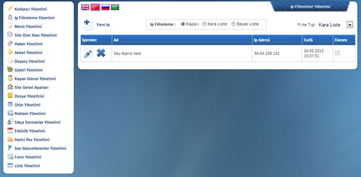

Yönetim paneline farklý IP adreslerinin eriþip eriþmeyeceðinin belirlendiði alandýr.
Kapalý: IP filtreleme özelliðinin kullanýlmadýðýný ifade eder.
Kara Liste: Belirlediðiniz IP adreslerinin yönetim paneline giriþlerini engeller.
Beyaz Liste: Kaydedilen IP adresleri dýþýnda hiçbir Ip adresinden yönetim paneline ulaþýlamayacaðýný ifade eder.